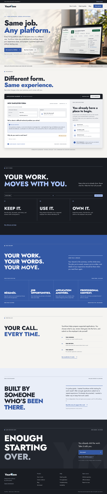
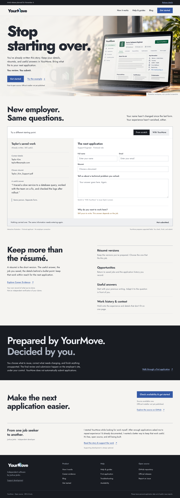
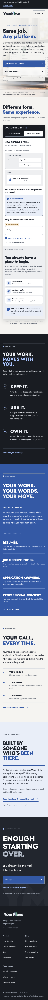
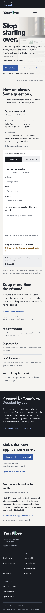
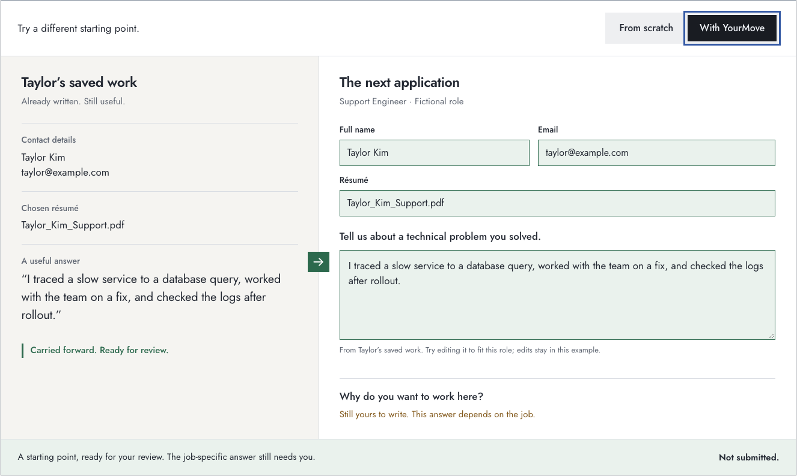

A direct promise, an application that remembers, and a clear boundary: you decide what goes in and submit yourself.
Open the local homepage · Homepage checks · Navigation checks · Served-site checks




The records remain visible. With YourMove, matching details and a saved answer become a preparation starting point. The visitor can edit that answer; the job-specific question remains unanswered. This is a fictional illustration with no employer connection.

Mobile prepared example · Mobile edited example
768px full page · 1024px full page · 320px full page
Verified in Chromium at 320, 390, 768, 1024, and 1440px, with keyboard, touch, reduced motion, real local links, no-JavaScript fallback, mocked analytics, and rendered photographic contrast checks. The older offline suite still stops at the documented 5px fallback-font overflow on the unchanged /review/ page at 320px. Current qualified product screenshots and a public installer remain future work.